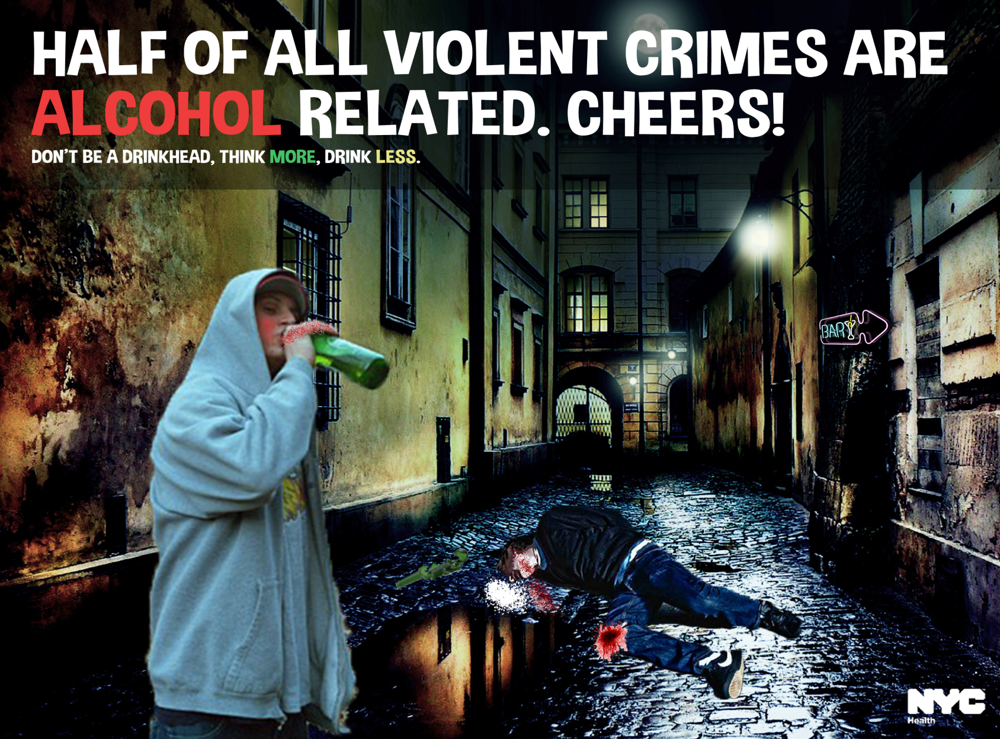

Bewustwordingscampagne
Jongeren die alcohol drinken, gedragen zich sneller agressief en asociaal. Dit komt doordat alcohol ervoor kan zorgen dat je minder de grenzen voelt van wat goed of verstandig is. Hierdoor ontstaat er sneller kans op agressiviteit en ongelukken. Vooral jongeren komen steeds vaker in aanraking met politie, doordat zij weinig controle hebben over hun alcoholgebruik. Daarnaast zoeken jongeren elkaar ook sneller op om stoer te doen en willen ze met iedereen vechten. Jongeren vertonen dominant gedrag om dat ze dat stoer vinden en willen laten zien ‘wie de sterkste is’.

Ontwerpkeuze
Ik heb voor dit probleem gekozen, omdat ik vooral aan het begin van mijn uitgaansleven veel gevechten heb gezien. Dit gebeurde vooral in Castricum. Veel jongeren daar zochten andere jongeren op om mee te vechten en dat liep soms te ver uit de hand. Op een gegeven moment, voelde ik mij niet meer veilig daar en besloot ik om daar niet meer te komen. Toen ik 18 was mocht ik gelukkig ook sneller naar andere plekken zoals: Alkmaar of Amsterdam. Daar was het gelukkig wel wat rustiger, omdat vooral ouderen meer beheersing hebben en ook gewoon plezier willen hebben. Ik heb uiteindelijk voor deze bewustwordingscampagne gekozen, omdat ik op het nieuws zag dat dit nog steeds vaak voorkomt. Echter is er nu corona, dus valt het de laatste tijd heel erg mee. Maar ik hoop gewoon dat ik met mijn poster jongeren kan aansporen om te drinken met maten en niet helemaal lam te worden.
Waar wil ik de doelgroep bewust van maken?
Ik wil de jongeren stimuleren om bewust met alcohol om te gaan en dat ze moeten drinken met maten. Drinken kan erg gemakkelijk vooral met ouders die er niks over zeggen, maar let vooral op elkaar en laat niemand vooral op jonge leeftijd niet alleen naar huis gaan.